Long sessions forget the plan
A rigged face is a long chain of small decisions, and each one depends on the ones before it. An AI agent is good at any single link. It is bad at holding the whole chain.
The first twenty-eight tries ran as one long conversation. Somewhere in the middle, the session would lose track of what had been decided, start improvising, and quietly undo earlier work. The head came out lumpy, the eyes in the wrong sockets, the mouth unable to open.
A friend's advice changed the approach: many small agents, a slim folder, and a loop. Each agent does one job, reads only what that job needs, saves one file and stops. The folder is the only memory. Nothing has to be remembered, because everything is written down.
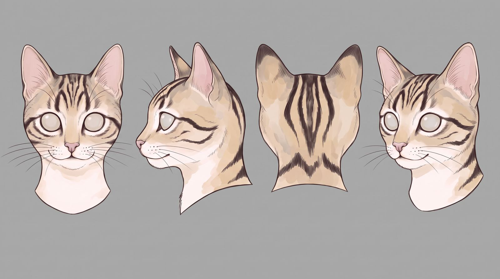
From a drawing to triangle soup
The cat started as a character sheet: a drawing in four views. Meshy turned that drawing into a 3D sculpt, fully automatically. Nobody sculpted, traced or modelled anything by hand: a picture went in and a head came out, with the right shape. But under the surface it's triangle soup: tens of thousands of triangles, scattered with no order, no rings round the eyes or mouth, and seams where the file was split.
That's fine for a statue and useless for a face. A face bends along its rings: lids close round the eye, lips part along the mouth line, the cheek folds when the cat grins. Triangle soup has nothing to bend along, so it tears and creases in the wrong places. An automatic quad remesher was tried too. It left holes at the nose and mouth, the two places that move most.
So the sculpt is kept only as the truth for shape. Everything else about the head, from the skull inside to the clean skin on top, is rebuilt over it. Most of this project is turning that soup back into a face, and keeping that automatic too: the goal is one picture in, a rigged character out, with a person deciding at the stops rather than doing the work.
A hub, bosses, builders and a checker
Every agent here is a separate Claude Code session, started fresh with a short brief. None of them runs long enough to drift.
| Role | How many | What it does |
|---|---|---|
| Hub | 2 | Starts each phase boss with a hand-over note, keeps the progress table in STATUS.md, and takes the boss's "phase done" report. The first hub drifted into side experiments, so it wrote a hand-over and a fresh hub took over. That's the system working: the cure for a long session is a new one. |
| Phase boss | 1 running, 1 next | One per phase. Modelling has two: step 7 (the skin) and surface (detail and UVs). Rig and animation get theirs in part two. A boss runs its steps in order, rules on small calls, brings the big ones to Tristan, and builds nothing itself. Steps 0 to 7f ran under the first hub before bosses existed. |
| Builder | 27 | One card, one fresh session. Setup, rig plan, skull, jaw hinge, teeth (twice: the first set was reset), tongue, landmark block-in, eyes, the one-eye test, the contours, four runs at the shared borders, and six area builders working side by side (the cheek has had two). A fresh ear run is waiting to start. |
| Experiment | 2 | Side questions kept out of the build: wrapping a ready-made mesh onto the sculpt, and finding a better way to get area maps out of the image model. |
| Checker | 1 subagent | A cheaper model each builder calls with its own card before asking Tristan anything. It measures in code, looks at the overlays, and reports pass or fail line by line. It never fixes. |
Step 7 alone uses twelve builders, because it's where the skin gets built.
Cards, files and stops
The project lives in one folder with a handful of parts, and agents see nothing outside it:
- README: the flow, the rules and the recipe for the sheets.
- STATUS: what's done, what's next, and a "Current numbers" table: the one home for every pivot, angle and limit. Cards point to it instead of copying values, so a number can't go stale in one card while it changes in another.
- cards/: one card per job. In, out, steps, checks, and when to stop.
- input/: the locked reference sheets, read-only.
- out/ and checks/: each step's file, script and proof pictures, named by step.
At every ✋ the work stops and Tristan looks. Nothing moves on without his OK. A card that doesn't say how to do something means stop and ask. No improvising.
Who checks what
AI is good at some checks and bad at others, so every check line on a card is tagged. (code) lines are things a script can measure: gaps, distances, point counts, open edges, mirror error, whether two files agree. The checker passes or fails those. (eye) lines are judgement: does it look like the sculpt, is it appealing, does it read as a cat. Only Tristan passes those, from side-by-side pictures with one question each. Wherever an eye check can become a measurement, it does.
Overlay first
Every modelling step starts by rendering its part from the sheet's own camera and drawing the outline in red over the sheet. Differences show at a glance, so nobody has to describe them by hand.
Every guide is made from the sculpt
Drawn reference drifts: a side view slightly turned, an eye slightly high. So every guide sheet is generated from a render of the sculpt itself, and checked by laying it back over that render.
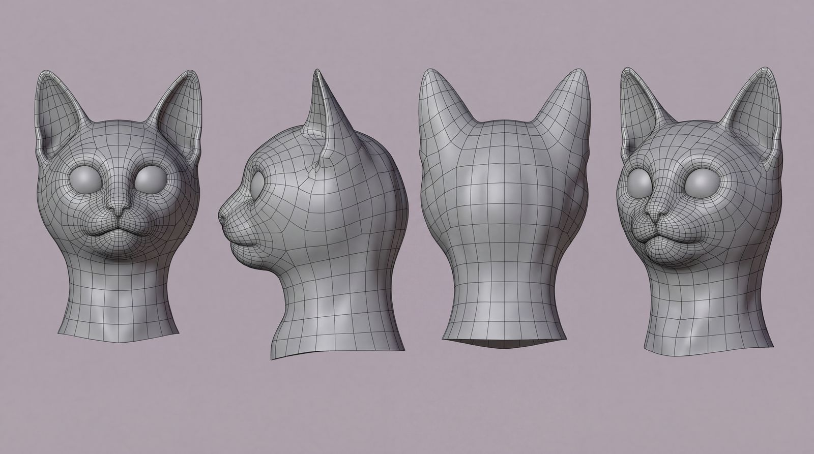
The first sheet is the trick the rest depend on. Nano Banana was given a render of Meshy's triangle-soup head and asked to make it look like a clean mesh. It drew one: even rings round the eyes and mouth, tidy loops over the skull and neck, all sitting on the sculpt's exact outline. No mesh like that exists yet. But the picture shows what one would look like, in the sculpt's own framing, so everything drawn on top of it lines up with the real model.
It also made the face readable. Triangle soup shows nothing about how a face is laid out, but on the mesh picture the rings show where the eye, the muzzle, the cheek and the brow each begin and end. That let Tristan infer where the regions were and mark them by hand, on the sheet, long before any agent could have found them.
From that sheet, Nano Banana Pro made a stack of anatomy sheets, each built on the one before: the face muscles, then those muscles as clean outlines, then the skin's own lines (lid rims, lips, creases) added in colour, then the soft masses as glowing patches, like a weight map.
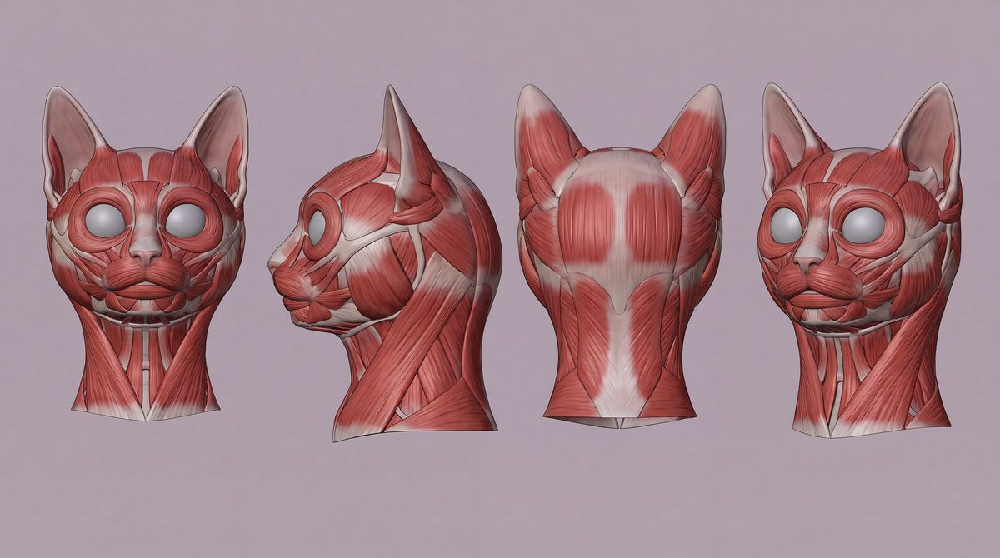
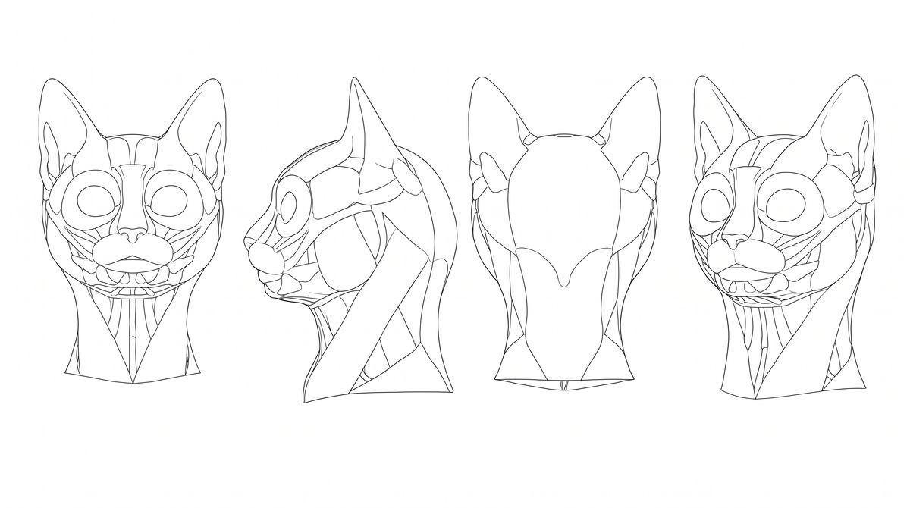
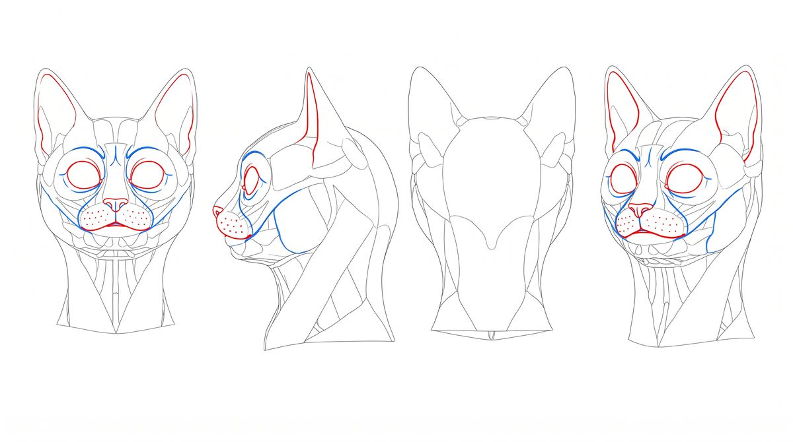
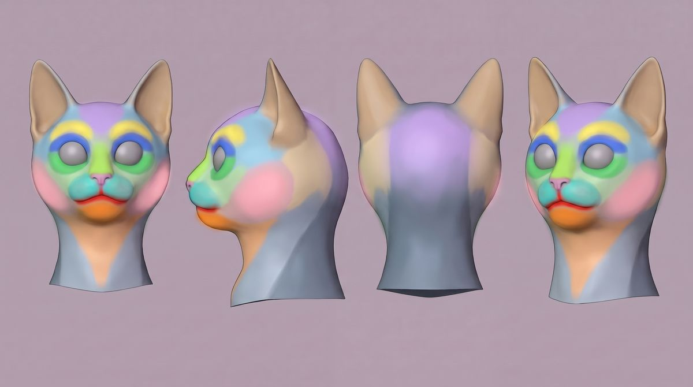
The image model makes things up, so these sheets are meaning only. They say what goes where and which way it moves. Positions always come from the sculpt. Two habits keep them honest: ask for one change per edit (several at once tends to shift the views), and lock a sheet only if it still lines up when laid over the render it came from.
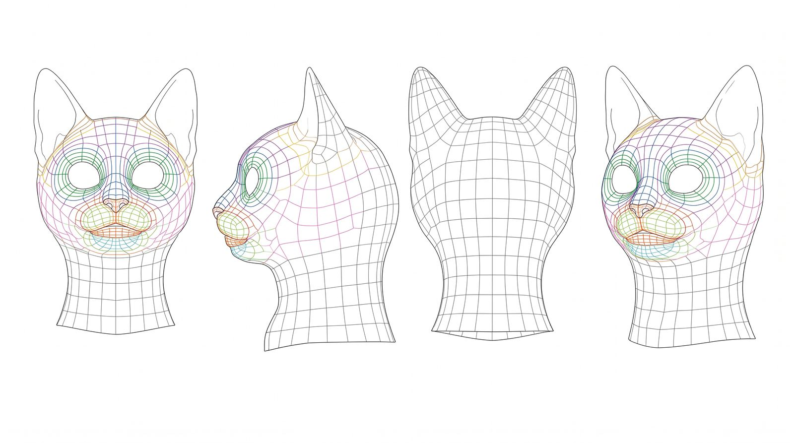
From the inside out
The head is built the way a studio builds a hero face: bones first, skin last. The rig is planned before anything is modelled, so the skin's rings can follow how the face will move.
| Step | What | State |
|---|---|---|
| 0–1 | Lock the reference sheets; set up a real-size head with front, side, back and ¾ cameras | done |
| 2 | Rig plan: every bone, pivot and control, and which areas each expression moves | done |
| 3–4 | Skull and jaw as separate bones; the jaw's hinge, with a bite and full-gape test | done |
| 5–6 | Teeth, gums, tongue, the inside of the mouth; eyeballs on their pivots | done |
| 5c | Block-in: stand-ins for eyes, nose, lids, lips and ears stuck to a proxy rig and posed through all five faces over the sheets | done |
| 7 | The skin: a clean mesh laid over the sculpt, built to bend | in progress |
| 8–9 | Fur and creases carried onto the clean mesh; UVs | planned |
After step 9 the skin goes to rigging: part two.
The block-in was added late on this cat and paid for itself at once: it caught the eye size, four lip moves, and ears that bones alone couldn't flatten for the hiss. For the next character it moves up to right after setup.
Six agents, one shared border
Step 7 is the biggest step: replacing Meshy's triangle soup with a clean mesh of four-sided faces, laid in rings that follow how the face moves. It's split so several agents can build at once without stepping on each other.
One eye first
Before the whole face, the full method ran on one eye: landmarks, lines from the sheets, curves on the sculpt, then rings. It proved the approach on a small patch before betting the head on it.
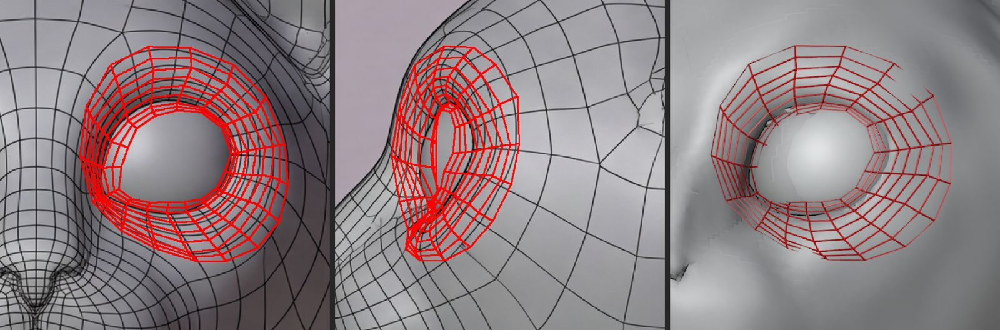
The contract
Next, one agent drew every border between areas and placed every point on them: 299 points, each with a fixed position. That file is the contract. The six area agents must use those points exactly, never adding, dropping or moving one. That's what lets six meshes built separately join up later with nothing to patch.
Four tries, one vote
Where do the borders go? The first attempts asked Nano Banana to place dots on a plain clay render, and it guessed: a render shows no borders, so the dots landed wherever the model felt like. What it does well is paint. So the ask changed: paint the head as flat colour areas, one colour per ring set, no lines, using the topology sheet to see where each set sits. Then code finds the colour edges and puts the dots on them exactly.
One painting can't be trusted on its own, so Nano Banana made four at once from the same render and the same prompt. Code laid them over each other and measured how much they agreed, pixel by pixel. Three matched each other on at least 88% of the head. One didn't: it painted the whole back of the skull brown. That one was dropped, and the other three voted. Each pixel took the colour most of them gave it. Where three separate tries land on the same border, it's probably a real border.
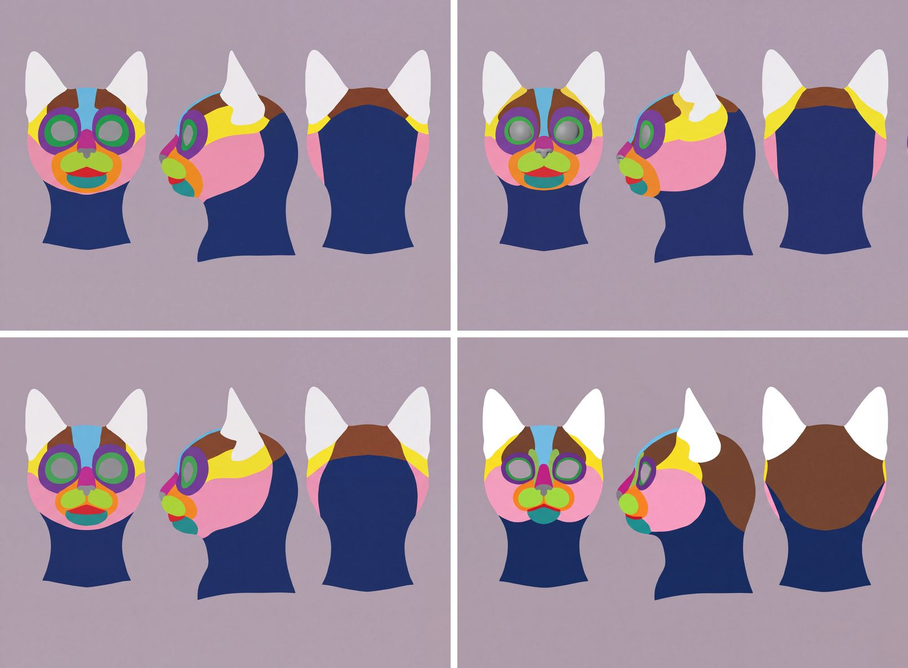
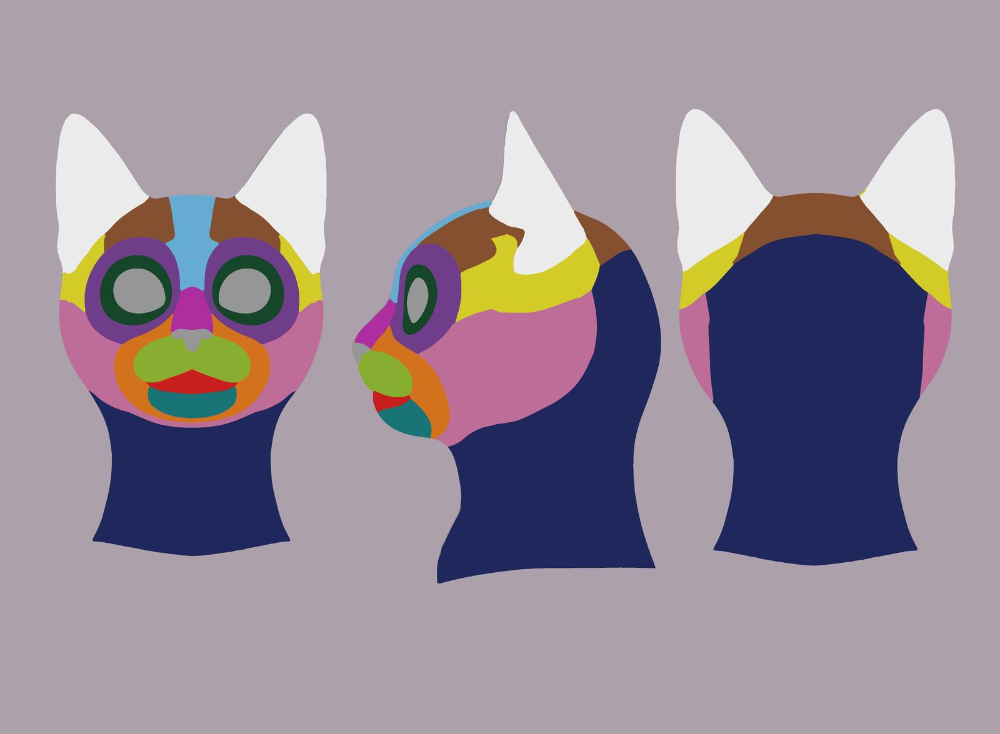
Code then merged any strip too thin to hold a row of faces, and the map went onto the sculpt itself.
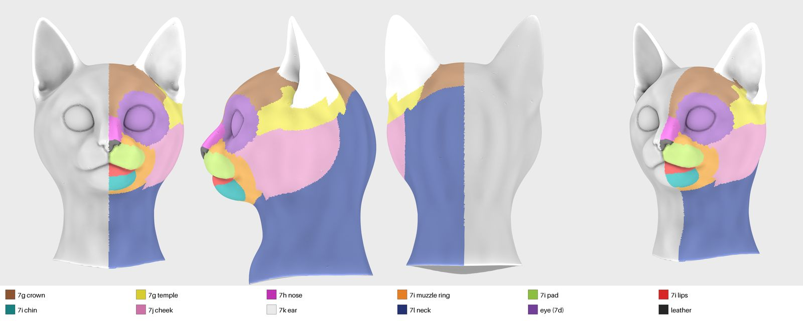
Side by side
Then six agents each build one area in their own background copy of Blender: crown and temple, nose, muzzle and mouth, cheek and jaw, ear, back and neck. Only one session ever touches the live Blender, and STATUS says who has it. After all six pass, a stitch joins them, mirrors the half to a whole head, and poses it to look for tearing.
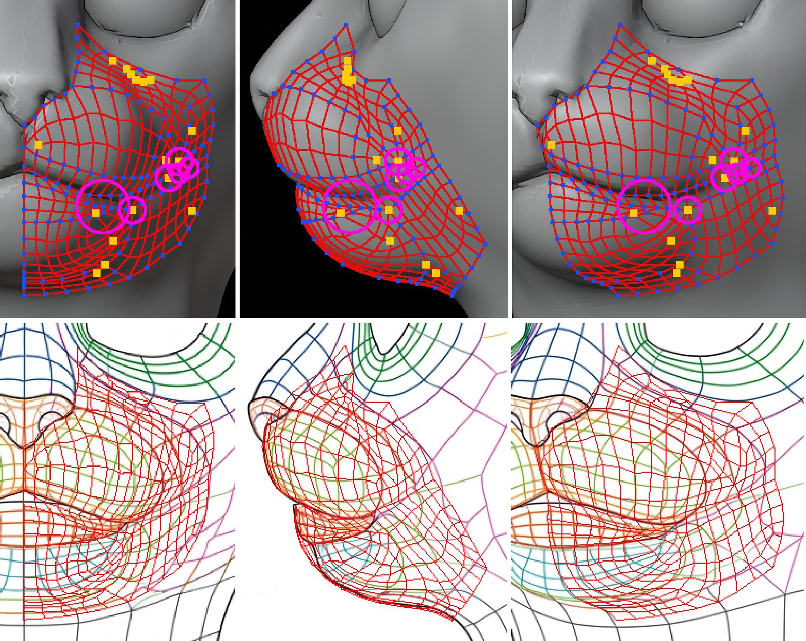
As of 25 October: the nose, the muzzle and the neck are done. The crown passed its checks but is the roughest so far, and may get one more round. The cheek is on its second round. The ear used up its three fix rounds and is being rebuilt fresh with a different layout. The stitch agent already caught one trap: the upper and lower lips have rows of points sitting exactly on top of each other, so a normal weld would glue the mouth shut. The lip seam now stays open on purpose. Sticky lips and the Cheshire zipper will need it later.
Learned the hard way
Each rule below came from something going wrong. It went into the README the same day, so no later agent has to learn it again.
- No sheet, no judgement. If a step has to decide what something is or where it ends, it needs a locked sheet. Regions, eye sockets, the nose and the skull all went wrong when agents guessed.
- Anchors are the only points. A curve keeps only its few anchors and is never turned into a mesh. Blender hides 24 steps in every curve segment, and those become hundreds of useless points.
- Lines no finer than the mesh. A border only counts if a row of faces fits between it and the next one. The image model draws finer detail than that, so it gets merged or dropped, not traced.
- No zigzags. A line that turns sharper than 30° anywhere but a junction always fails.
- Three fix rounds, then reset. If a step needs a fourth round, it writes down what it learned and a fresh session starts over. The teeth were reset this way, and now the ear.
- A change upstream reruns everything after it. When the jaw hinge moved, two cards kept the old one. Now every later step reruns on the new file.
- Checks look one step ahead. A step passes only if it already works for what the next step needs from it.
- Split big steps. The shared borders grew into four jobs in one card and kept going back and forth. Next time that's four cards, each with its own stop.
- Questions come in plain words. Each one with a picture, a recommendation, and what yes and no each do. Agreeing to jargon you don't understand isn't a decision.
Good structure from garbage, by averaging
The whole method rests on one move Tristan found: you can get trustworthy structure out of a model that only makes things up, as long as you never trust one answer.
Look at what goes in. Meshy's sculpt is triangle soup: the right shape, but no structure at all. Nano Banana is an image model: it invents freely, and any single picture it makes might be wrong in ways that are hard to spot. Neither one, alone, can tell you where a cat's cheek ends.
Put them together and the problem changes. Render the soup, so the shape is fixed and true. Ask Nano Banana to read structure into that render, as a clean mesh, as muscles, as flat colour areas, so every answer is drawn in the sculpt's exact framing. Then ask several times and keep only what the answers agree on. One painting is a guess. Three paintings that put a border in the same place are evidence. The mistakes are random and the real features aren't, so averaging cancels the mistakes and leaves the features.
Code does the averaging, measures the agreement, and drops the odd one out. Nobody draws, traces or models anything. A garbage mesh and an unreliable image model, used together, produced the area map that six agents are now building the skin from.
The memory goes in the folder, not the agent
None of the agents here is smarter than the one that failed twenty-eight times. What changed is that none of them has to remember anything. The plan, the numbers and every decision live in a few plain files, and any session can be thrown away and replaced by a fresh one that reads them.
That makes the person's job different too. Tristan doesn't build. He decides: at each stop, one picture, one question. The agents do the bookkeeping, and the checker does the measuring.
And it compounds. Once this head's skin is finished it becomes the template for the next character: sculpt a new head, wrap this mesh onto it by its landmarks (a test fit took seconds), and step 7 shrinks from building to checking. The second cat should take a fraction of the first.